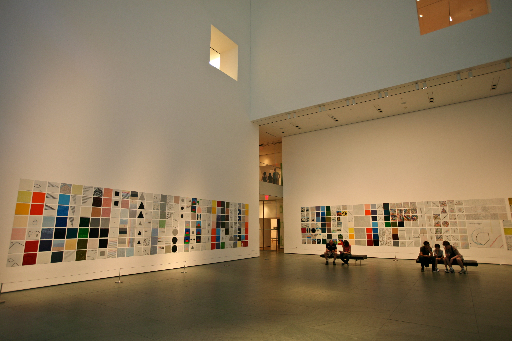

The Art in New York

The Art in New York will intoduce most famous Art museums in New YorkCity.
Moma, Guggenheim and Metropolitan of Musueum of Art. It will describe about main exhibitions and events.
The purpose of this magazine is to spread the art culture.
Not only for the people that love art but for those who enjoy the beauty of art.
Please contact Sejung Nam.
visit Queens college
65-30 Kissena Blvd, Flushing, NY 11367